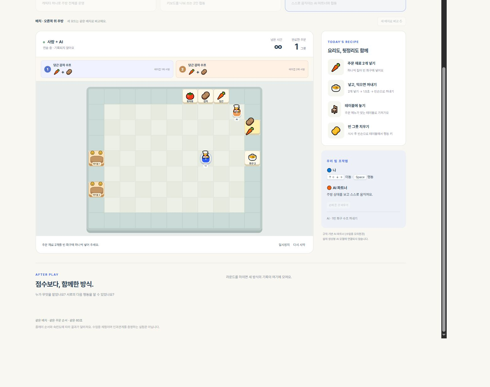
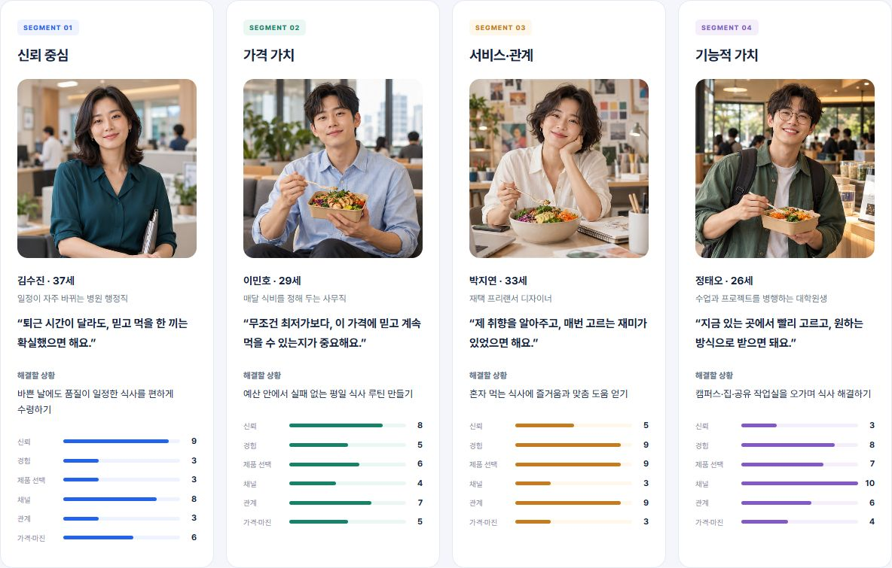

Restaurant Tycoon
Together, Kitchen
Human–AI vs Human–Human Teamwork
Same kitchen. Three team setups.
Interactive games I built for product planning workshops

Human–AI vs Human–Human Teamwork
Same kitchen. Three team setups.

Team Battle: Market Response
Four customer groups. Strategy trade-offs.

Parallel vs Sequential Teamwork
Task dependencies. Shared completion time.
View rules
Preview a book. Reflect on your choices.
Random Preview and Book Interview, in one collection.
Explore activities